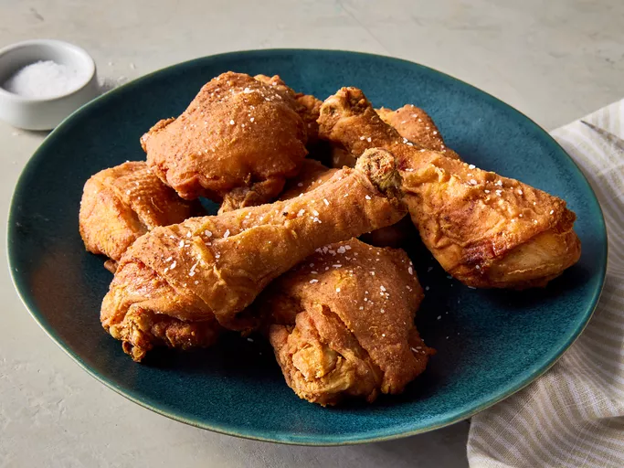

Southern Fried Chicken
This Southern fried chicken recipe is originally from Alabama and has been passed down for generations
Ingredients
- 1 cup all-purpose flour
- 2 teaspoons paprika
- 1 teaspoon salt
- 1 teaspoon ground black pepper
- 1 teaspoon garlic powder
- 1 teaspoon onion powder
- ½ teaspoon cayenne pepper (Optional)
- 1 (3 pound) whole chicken, cut into pieces
- vegetable oil for frying
Steps
- Gather all ingredients.
- Combine flour, paprika, salt, black pepper, garlic powder, onion powder, and cayenne in a large resealable plastic bag. Add chicken pieces to the bag; toss to coat.
- Place floured chicken pieces on a wire rack set over a baking sheet; reserve remaining flour in the bag. Refrigerate chicken until flour looks pasty, about 45 minutes.
- Meanwhile, heat 1 ½ inches oil in a deep fryer or 5-quart heavy pot to 375 degrees F (190 degrees C)
- Place chicken pieces back into the reserved bag of flour; toss to coat. This will help the coating cling nicely to the chicken pieces for crispier results. Preheat the oven to 200 degrees F (93 degrees C).
- Lower chicken pieces, 2 to 3 pieces at a time, carefully into the hot oil. Fry until golden, flipping once, 8 to 12 minutes. An instant-read thermometer inserted near but not touching bones should read 165 degrees F (74 degrees C).
- Transfer to a paper towel-lined plate to drain. Keep fried chicken warm in the preheated oven while frying remaining chicken.
- Serve hot and enjoy!